Objektif Pembelajaran
Pada akhir topik ini, pelajar dapat:
- 2.1 Menerangkan prosedur operasi standard (SOP) untuk memeriksa komponen pneumatik dan hidraulik.
- 2.2 Mengenal pasti jenis komponen pneumatik dan hidraulik mengikut prinsip asas.
- 2.3 Mengenal pasti binaan dan fungsi komponen mengikut manual.
- 2.4 Mengenal pasti jenis komponen mengikut aplikasi.
- 2.5 Memeriksa komponen pneumatik dan hidraulik menggunakan alat, instrumen, dan senarai semak mengikut manual.
- 2.6 Memasang komponen baru dengan betul mengikut manual dan SOP.
- 2.7 Mengaplikasi prosedur keselamatan mengikut keperluan keselamatan.
2.0 Injap
Injap merupakan peralatan yang menerima arahan dalaman samada dalam bentuk insani, mekanikal, elektrikal atau pneumatik untuk melepaskan, atau menghentikan atau menyalurkan kembali pengaliran udara melaluinya.
5 Jenis Injap Pneumatik
4 Kaedah Mengerakkan Injap
Injap boleh digerakkan melalui 4 kaedah utama:
a) Kaedah Insani
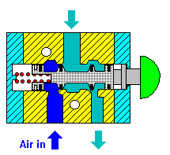
Gambarajah binaan: Digerakkan oleh operator dengan cara menekan butang yang disediakan
b) Kaedah Mekanikal
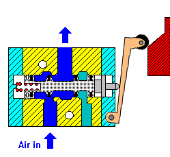
Gambarajah binaan: Injap digerakkan oleh mekanisma mekanikal seperti suis beroda dan rod silinder
c) Kaedah Pneumatik
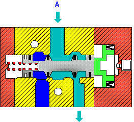
Gambarajah binaan: Injap digerakkan oleh angin mampatan yang bertindak mengerakkan kedudukan saluran angin
d) Kaedah Elektrikal
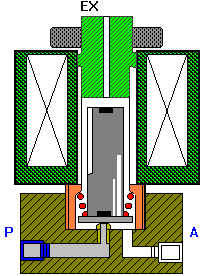
Gambarajah binaan: Injap digerakkan oleh solenoid yang dijana oleh kuasa elektrik
2.1 Injap Kawalan Arah
Injap kawalan arah dikelaskan mengikut ciri rekabentuk dan bergantung kepada penggunaannya seperti di bawah:
Kegunaan & Simbol Injap Kawalan Berarah
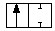
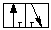
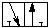
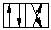
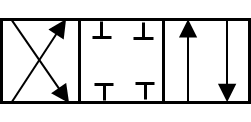
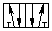
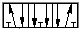
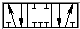
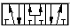
Jadual 2.1: Jenis-jenis injap kawalan arah
4 Jenis Injap Kawalan Arah
Injap kawalan arah terbahagi kepada empat iaitu:
a) Injap Kili
Terdiri daripada aci yang dibentuk menjadi sebatang kili dipasang dalam kelongsong dan boleh digerakkan bagi tujuan untuk mengubah arah aliran udara.
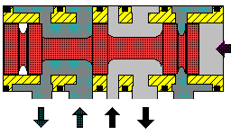
Gambarajah 2.2: Injap kawalan arah Kili
Kebaikan Injap Kili
Keburukan Injap Kili
b) Injap Kawalan Arah Popet
Diperbuat daripada getah tiruan atau resin yang dipadatkan. Popet di dalam injap akan menutup tempat duduk injap "valve seat" pada arah paksi untuk memberhentikan aliran udara atau untuk membuka injap bagi membolehkan udara melaluinya di tempat duduk injap.
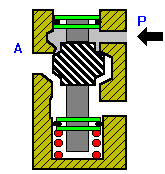
Gambarajah 2.3: Injap Kawalan Arah Jenis Popet
Kebaikan Injap Popet
Keburukan Injap Popet
c) Injap Gelongsor
Diambil daripada teknik injap yang digunakan pada injap stim yang terdapat pada keretapi. Berfungsi mengalirkan udara dengan cara menggelongsor atau menggerakkan injap gelongsor pada permukaan rata. Kedua-dua permukaan mestilah rata di mana permukaan gelongsor berfungsi sebagai kedap.
Semasa gerakannya, rintangan geseran mestilah diminimumkan dengan cara menggunakan minyak pelincir pada permukaan yang bersentuhan. Terdapat juga injap gelongsor jenis kecil dengan menggunakan bahan "resin tiruan" untuk mendapatkan kedapan yang baik.
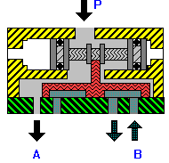
Gambarajah 2.4: Injap Kawalan Arah Jenis Gelongsor
Kebaikan Injap Gelongsor
Keburukan Injap Gelongsor
d) Injap Kawalan Arah Jenis Putar
Biasanya digunakan sebagai injap pandu kepada aliran terus ke lain injap. Injap putar kebiasaannya diputar secara insani, elektrikal dan hidraulik. Injap putar biasa digunakan untuk kawalan pada tekanan rendah dan isipadu rendah. Kebaikan injap ini ialah ianya mudah dan padat.
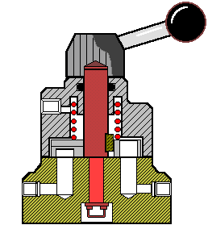
Gambarajah 2.5: Injap Kawalan Arah Jenis Putar
2.2 Injap Sehala
Terbahagi kepada dua iaitu jenis "ATAU" dan "DAN". Satu jenis injap yang dapat digolongkan dalam kumpulan injap sehala. Mempunyai dua masukan di sebelah kanan dan kiri tetapi hanya satu masukan sahaja dibenarkan untuk menghasilkan keluaran.
a) Injap ATAU
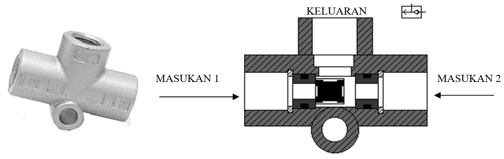
Gambarajah 2.6 (a): Injap ATAU — dua masukan, satu keluaran (logik OR)
b) Injap DAN
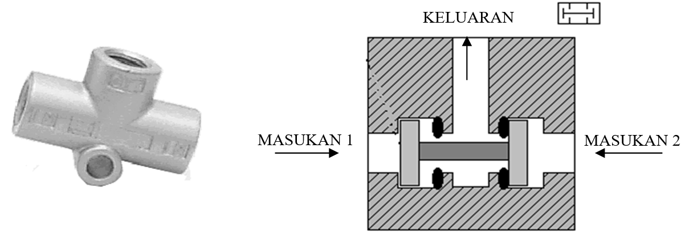
Gambarajah 2.6 (b): Injap DAN — dua masukan, satu keluaran (logik AND)
- Dua masukan
- Satu keluaran
- Logik OR
- Keluaran jika salah satu aktif
- Dua masukan
- Satu keluaran
- Logik AND
- Keluaran jika kedua-dua aktif
2.3 Injap Kawalan Aliran
1. Mengawal kelajuan ke atas penggerak dan bebannya
2. Memperolehi kelajuan yang tetap bagi penggerak
3. Berfungsi sebagai pengkusyenan bagi hentaman beban pada akhir lejang pergerakan silinder
4. Mengelakkan beban yang berat dari jatuh dengan tiba-tiba semasa gerakannya ke bawah
3 Jenis Injap Kawalan Aliran
a) Injap Kawalan Aliran Jenis Penghad Mudah
Injap jenis ini terdiri dari badan mudah dan skru pendikit yang boleh dilaras untuk mengawal orifis di mana kawalan aliran akan diperolehi. Injap jenis ini biasa digunakan pada bahagian keluaran injap kuasa di mana ia digunakan untuk menghadkan kadar alir angin bagi mengawal kelajuan penggerak.
b) Injap Kawalan Aliran Jenis Penghad Berubah Dengan Aliran Balik Bebas
Injap jenis ini hanya satu aliran sahaja digunakan untuk mengawal kadar alir. Oleh itu injap sehala dipasang pada injap ini. Injap ini juga tidak menghadkan aliran balik. Injap sehala yang terdapat pada injap ini terdiri daripada gelung getah yang boleh melentur ke atas apabila aliran balik berlaku. Semasa aliran terus gelung berkeadaan lurus dan mengawal kadar aliran bergantung kepada skru pendikit.
c) Injap Kawalan Aliran Digerakkan Oleh Sesondol Guling
Injap jenis ini berfungsi seperti injap kawalan aliran jenis biasa tetapi sesondol guling digunakan untuk mengubah kadar alir udara yang melalui injap ini. Kawalan kelajuan yang berubah semasa lejang keluaran dan masukan boleh diperolehi dengan cara menggunakan injap ini. Injap jenis ini juga membenarkan aliran balik bebas.
2.4 Injap Kawalan Tekanan
Injap kawalan tekanan berfungsi untuk mengawal tekanan. Ianya terbahagi kepada dua iaitu:
a) Injap Pengurang Tekanan Dengan Fungsi Pelega
Kebanyakan injap pengurang tekanan dilengkapi dengan fungsi pelega tekanan sekunder. Binaan injap ini ialah terdapat lubang kecil di bahagian bawah gegendang dan lubang laluan angin di bahagian bawah injap. Dalam keadaan biasa lubang di bahagian bawah gegendang sentiasa tertutup dan ruang laluan angin di bahagian bawah injap terbuka untuk membolehkan angin melaluinya. Apabila tekanan bertambah di bahagian keluaran, gegendang akan bergerak ke atas. Gerakan ini akan menyebabkan batang gegendang turut bergerak ke atas dan menutup lubang aliran di bahagian bawah injap. Injap seperti ini sesuai digunakan untuk mengawal aliran udara ke silinder.
b) Injap Pengurang Tekanan Tanpa Pelega
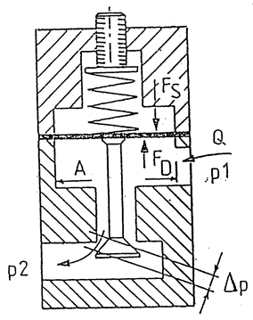
Gambarajah 2.7 (a): Injap pengurang tekanan tanpa pelega — binaan
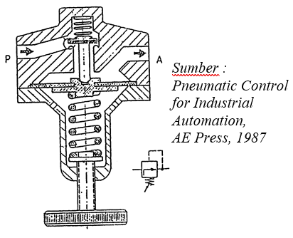
Gambarajah 2.7 (b): Konsep kerja injap pengurang tekanan tanpa pelega
Berpandukan rajah di atas, dalam keadaan D1 dan kadar alir di bahagian sekunder stabil, injap akan berada dalam keadaan stabil di mana Fs dan Fd mempunyai nilai yang sama. Keluasan ruang aliran pada permukaan injap (di mana mengikut kedudukan gegendang) boleh mempengaruhi nilai kejatuhan tekanan Δp yang mana ia dapat mempengaruhi tekanan dari P1 ke P2.
Keseimbangan daya akan terganggu disebabkan oleh pengurangan nilai P2 menyebabkan penambahan nilai kadar alir Q yang diperlukan. Pegas akan menolak gegendang dan ruang injap akan terbuka lebih luas bagi membolehkan aliran yang lebih. Dengan cara ini Δp akan berkurangan dan P2 akan bertambah sehingga nilai Fs sama dengan Fd (Fs adalah tekanan pegas yang dilaras).
Apabila tekanan P1 berubah, tekanan P2 juga berubah tetapi pegas bertindak balas dengan cepat bagi mengimbangkan keadaan dengan gerakkannya ke atas atau ke bawah. Dengan pergerakan injap membuka atau menutup (ke atas atau ke bawah) tekanan P2 akan stabil atau tetap.
Apabila tekanan P2 bertambah keseimbangan tekanan Fs = Fd akan terganggu dan gegendang akan tertekan atau bergerak ke atas. Tindakan ini akan menyebabkan ruang laluan injap mengecil dan P2 akan menurun dan keseimbangan Fs = Fd akan diperolehi semula.
2.5 Injap Bergabung
Gabungan daripada beberapa injap menghasilkan fungsi yang baru. Injap Pemasa merupakan salah satu contoh injap gabungan yang menggabungkan injap satu hala, takungan dan injap kawalan 3/2.
a) Binaan — Benda Nyata
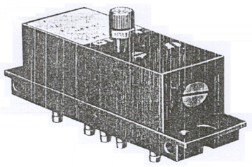
Gambarajah 2.8 (a): Binaan injap bergabung — benda nyata
b) Binaan — Skematik
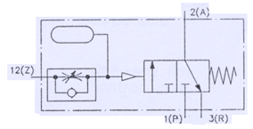
Gambarajah 2.8 (b): Binaan injap bergabung — skematik
Rumusan Topik 2
- Injap = peralatan yang menerima arahan untuk lepas/henti/salur udara
- 5 jenis injap: Kawalan arah, sehala, kawalan aliran, kawalan tekanan, bergabung
- 4 kaedah gerakkan: Insani, mekanikal, pneumatik, elektrikal
- 4 binaan injap kawalan arah: Kili, popet, gelongsor, putar
- Jenis injap kawalan arah: 2/2, 3/2 NC/NO, 4/2, 4/3, 5/2, 5/3 (Exhaust/Close/Pressure centre)
- Injap sehala: ATAU (OR) dan DAN (AND)
- Injap kawalan aliran: 3 jenis (penghad mudah, penghad berubah, sesondol guling)
- Injap kawalan tekanan: Dengan dan tanpa pelega
- Injap bergabung: Contoh — injap pemasa